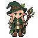

one thing at a time
25:00
ready when you are
space to start · r to reset

rain room
visual anchor
today's rhythm
A small start is still a start.
one thing at a time
space to start · r to reset

A small start is still a start.